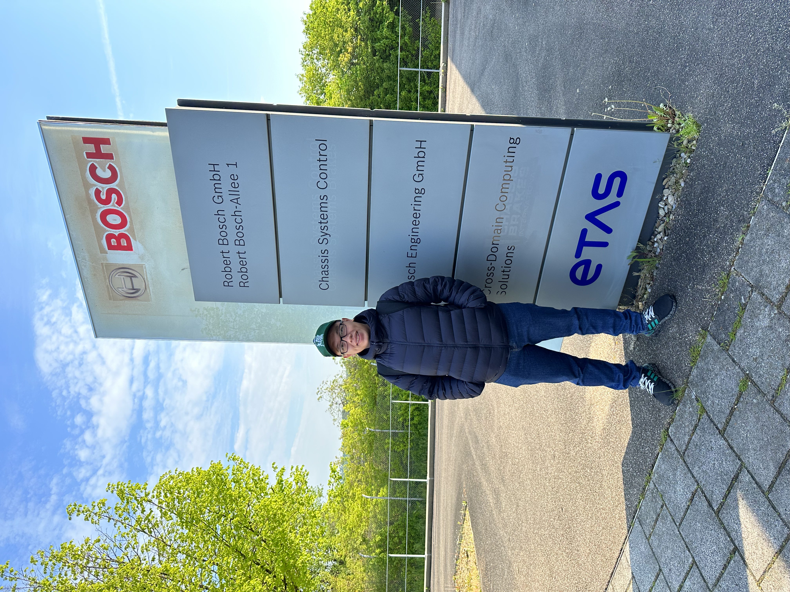

whoami
Nguyen Gia Huy
I'm a DevOps Engineer_
# Automating infrastructure · CI/CD · Cloud on AWS & Azure
$cat about.txt_

# DevOps Engineer — Ho Chi Minh City, Viet Nam
I am a DevOps Engineer with 5 years of hands-on experience in automating infrastructure, optimizing CI/CD pipelines, and ensuring scalable cloud deployments. I am skilled in bridging development and operations to deliver reliable, high-performing systems. I am seeking to leverage expertise in DevOps practices while driving innovation through AI implementation, with a focus on enhancing automation, predictive monitoring, and intelligent workflow optimization.
- dob
- 1998-03-26
- phone
- +84 903 336 493
- degree
- Bachelor of Information Technology
- city
- Ho Chi Minh City, Viet Nam
$./skills --explore_
< drag to explore the skills universe >